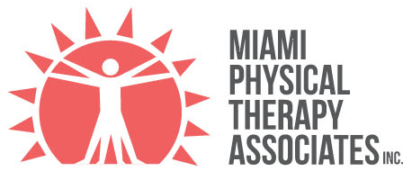

Call 305.444.0074Since 1980, Miami Physical Therapy Associates has treated the whole family on Coral Way, from a growing son's knee to a mother's hip replacement, with long-lasting, compassionate relationships.
Pick an area. Your licensed therapist builds the plan around your own goals.
Programs that maximise function and minimise long-term disability. Certified in LSVT BIG for Parkinson's and other movement disorders.
For professional athletes, weekend warriors and anyone in between, often with Kinesiotape alongside therapy.
Starts with a thorough evaluation, then pain management, manual techniques, therapeutic massage, exercise, stabilisation and Pilates-based work.
Better balance lowers the risk of falls. Gait work ranges from losing a limp to first steps after a stroke.
Seating and wheelchair evaluations are routine here, and doctors and agencies refer patients for them.
Three therapy rooms and a gym area with specialised equipment.
Up to 80% body weight support, so you can walk or run with reduced impact.
Harness and overhead support for treadmill walking with partial weight bearing.
Two functional electrical stimulation bikes for people with little voluntary leg movement.
Balance testing, fall risk screening and conditioning.
"Power Tower" for core and limb strengthening with partial weight bearing.
Reformer, Stability Chair, plus Bioness L300 and H200 systems.
All licensed by the state of Florida, and members of the APTA and the Florida Physical Therapy Association.
In network with BCBS, Aetna and Cigna. Packages are available for self-pay clients and for services such as dry needling and wellness or fitness training.
A licensed therapist evaluates you, and with your physician's orders and your goals sets a safe plan. Florida has direct access to physical therapy, so a referral is not required if your insurance allows.
Free parking in the back of the building. Office hours 7:00am-7:00pm.
Office 305.444.0074 · Fax 305.444.8503
customerservice@miamipta.com